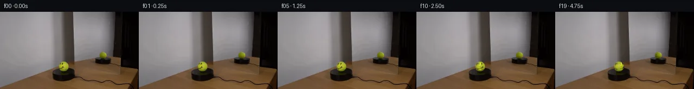
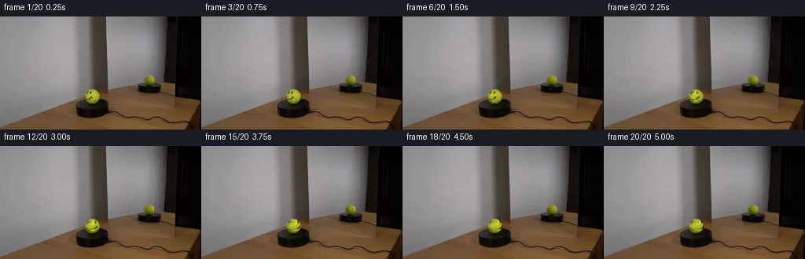
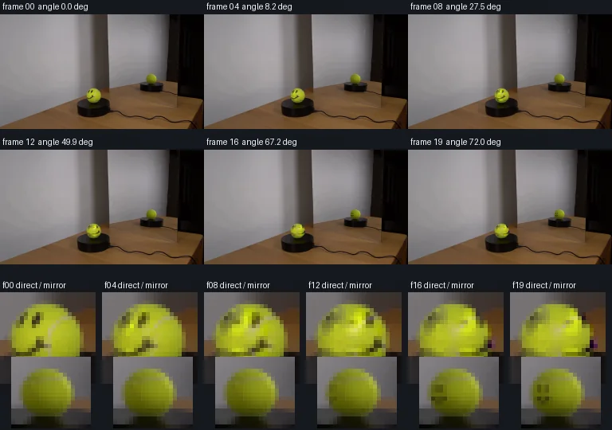

V0 · 初版 · 最终提交
![]()
Observable Generation Trace
把最终像素视频、Harness 冻结的每轮候选、真实工具事件和 Agent 自述放在同一页。可观测证据与模型自述分开标记，避免把“模型说它检查过”误当成真实工具调用。
![首帧]()
Static locked-off single-shot with fixed frame throughout filmed with constant framerate in real-time. The scene shows a realistic scientific demonstration. The scene only contains the described setup and actions. The mirror points towards the tennis ball and initially reflects the side of the tennis ball without a smiley face. The tennis ball with a smiley face sits on the black platform. The tennis ball with a smiley face rotates slowly clockwise on the black platform in front of the mirror.
首帧显示在左侧播放器初始画面。Track 权限、隔离和 tensor 一致性来自 run manifest，而不是 METHOD.md。
默认勾选初版和最终版；可选其他版本一起同步播放。仅检查图更新的连续重复快照已合并，回退旧视频仍保留为一次修订。
Observable events
来源：events.jsonl + run manifest
此 Track 禁止读取输出图片。逐轮预览由外部 Harness 自动冻结，只用于事后审计，生成 Agent 当时看不到这些页面。
Frozen candidates
每张图来自该 round 的真实 00 / 01 / 05 / 10 / 19 帧

pixels 0a9bfbef7b11dca4 · code bdd940c22e1c4ae0
--- previous/generate.py +++ current/generate.py @@ -0,0 +1,217 @@ +"""Generate the 20-frame locked-off tennis-ball rotation sequence. + +The source image is treated purely as an RGB tensor. The directly viewed +smiley is separated from fixed illumination, transported over an analytic +sphere, and composited back into the untouched source. A small reflected +smiley enters the dim mirror image when the corresponding marked longitude +becomes visible to the mirror. +""" + +from pathlib import Path + +import cv2 +import numpy as np +from PIL import Image, ImageDraw, ImageFont +from scipy.ndimage import map_coordinates + +from artifact_io import save + + +ROOT = Path(__file__).resolve().parent +FRAME_COUNT = 20 + + +def smoothstep(value: float, edge0: float = 0.0, edge1: float = 1.0) -> float: + """Cubic smoothstep with a clamped domain.""" + if edge1 == edge0: + return float(value >= edge1) + x = np.clip((value - edge0) / (edge1 - edge0), 0.0, 1.0) + return float(x * x * (3.0 - 2.0 * x)) + + +def rotation_angles() -> np.ndarray: + """Return the eased 0..72 degree yaw specified in OBSERVATION.md.""" + phase = np.linspace(0.0, 1.0, FRAME_COUNT) + eased = phase * phase * (3.0 - 2.0 * phase) + return np.deg2rad(72.0 * eased) + + +def make_direct_face_mask(shape: tuple[int, int]) -> np.ndarray: + """Measured binary support for both eyes and the curved smile.""" + h, w = shape + mask = np.zeros((h, w), np.uint8) + # Eye clusters measured from local median residuals. + cv2.ellipse(mask, (111, 97), (2, 3), -8, 0, 360, 255, -1) + cv2.ellipse(mask, (115, 97), (2, 3), 8, 0, 360, 255, -1) + # The visible smile is foreshortened: high on the right, curving down-left. + mouth = np.array([(117, 101), (117, 103), (115, 105), + (112, 106), (109, 104)], np.int32) + cv2.polylines(mask, [mouth], False, 255, 3, cv2.LINE_8) + + yy, xx = np.ogrid[:h, :w] + sphere_inner = ((xx - 118.0) / 9.7) ** 2 + ((yy - 102.0) / 10.2) ** 2 < 0.90 ** 2 + mask[~sphere_inner] = 0 + return mask + + +def prepare_direct_ball(source: np.ndarray) -> tuple[np.ndarray, np.ndarray]: + """Inpaint only the measured smiley support and return its RGB residual.""" + face_mask = make_direct_face_mask(source.shape[:2]) + # TELEA provides a locally smooth continuation of the yellow felt and its + # illumination. Pixels outside the mask are restored exactly afterward. + inpainted = cv2.inpaint(source[:, :, ::-1], face_mask, 2.0, cv2.INPAINT_TELEA)[:, :, ::-1] + clean = source.copy() + selected = face_mask > 0 + clean[selected] = inpainted[selected] + residual = source.astype(np.float32) - clean.astype(np.float32) + residual[~selected] = 0.0 + return clean, residual + + +def rotate_direct_smiley(clean: np.ndarray, residual: np.ndarray, theta: float) -> np.ndarray: + """Transport the measured smiley residual across a fixed shaded sphere.""" + frame = clean.astype(np.float32).copy() + h, w = clean.shape[:2] + cy, cx = 102.0, 118.0 + ry, rx = 10.2, 9.7 + + yy, xx = np.mgrid[0:h, 0:w].astype(np.float32) + yd = (yy - cy) / ry + xd = (xx - cx) / rx + radial = xd * xd + yd * yd + interior = radial < 0.94 ** 2 + zd = np.sqrt(np.maximum(0.0, 1.0 - radial)) + + # Inverse y-axis rotation from a destination surface point to the source + # longitude. Positive theta moves the front smiley toward screen-right. + ct, st = np.cos(theta), np.sin(theta) … diff truncated; 130 more lines …
pixels 0a9bfbef7b11dca4 · code 174ab0b951d4c687
--- previous/generate.py
+++ current/generate.py
@@ -8,6 +8,7 @@
"""
from pathlib import Path
+import shutil
import cv2
import numpy as np
@@ -210,6 +211,8 @@
raise ValueError(f"Unexpected source shape: {source.shape}")
frames = generate_frames(source)
save(frames, ROOT)
+ # Preserve both pixel and encoded-file identity for the mandated first frame.
+ shutil.copyfile(ROOT / "first_frame.png", ROOT / "frames" / "00.png")
save_transition_check(frames)
Final visual checks
Harness 保存的最终产物


Agent claims
以下文字由生成 Agent 撰写，不等同于工具证据
I inspected first_frame.png only as a 256×144 uint8 RGB array. I used channel statistics, thresholded color predicates, connected components, row/column runs, local median residuals, and printed RGB sample tables. I did not open or view the image with an image-reading/viewing tool.
The ball rotates slowly about its vertical axis through 72 degrees over the 19 inter-frame intervals. The silhouette and world-locked illumination remain fixed. Surface detail is transported across a spherical projection: the smiley moves gradually toward the ball's right limb. The mirror shows the complementary side view; it begins without a smiley, then a small, dim reflected smiley eases into view late in the shot as the marked longitude turns toward the mirror. Motion uses smoothstep timing so starting and ending angular velocity are gentle.
| Frame | Time (s) | Target angle | Event |
|---|---|---|---|
| 00 | 0.00 | 0.0° | Exact source frame; front smiley visible, reflected side unmarked. |
| 01 | 0.25 | 0.6° | First nearly imperceptible clockwise surface movement. |
| 02 | 0.50 | 2.2° | Eyes and mouth begin shifting right on the sphere. |
| 03 | 0.75 | 4.8° | Continuous subpixel spherical warp; platform stays locked. |
| 04 | 1.00 | 8.2° | Smiley is slightly less frontal. |
| 05 | 1.25 | 12.3° | Slow clockwise turn is clearly established. |
| 06 | 1.50 | 17.0° | Facial marks continue around the curved surface. |
| 07 | 1.75 | 22.1° | Smile approaches the sphere's mid-right area. |
| 08 | 2.00 | 27.5° | Direct ball remains stationary in silhouette. |
| 09 | 2.25 | 33.2° | Reflection still predominantly shows an unmarked side. |
| 10 | 2.50 | 38.8° | First extremely faint reflected facial detail may enter. |
| 11 | 2.75 | 44.5° | Reflected detail becomes numerically present but dim. |
| 12 | 3.00 | 49.9° | Direct smiley foreshortens toward the right. |
| 13 | 3.25 | 55.0° | Small reflected eyes/mouth begin resolving. |
| 14 | 3.50 | 59.7° | Mirror response strengthens gradually. |
| 15 | 3.75 | 63.8° | Direct marks narrow close to the limb. |
| 16 | 4.00 | 67.2° | Reflected smiley is clearest while remaining dim and small. |
| 17 | 4.25 | 69.8° | Rotation eases toward its final orientation. |
| 18 | 4.50 | 71.4° | Minimal final surface displacement. |
| 19 | 4.75 | 72.0° | End pose; camera and all rigid scene geometry remain unchanged. |
This sequence is a local pixel animation derived only from first_frame.png and prompt.txt. The camera, ball silhouette, mirror geometry, platform, table, and background remain fixed. The only animated pixels are surface markings on the directly viewed tennis ball and their delayed counterpart in the mirror.
I did not use an image Read/View tool, external reference, network source, model, engine, mask, score, or subagent. Scene analysis and review were numeric RGB-array operations only.
generate.py loads the source as a 144×256 RGB uint8 array.(118, 102).The initial mirror image is left untouched and therefore contains the requested unmarked side of the ball. The mirror is modeled as viewing the sphere from a roughly +72° side longitude. Once the rotating smiley longitude enters that view (after approximately 36° of yaw), two subpixel Gaussian eyes and a curved Gaussian mouth are darkened into the measured reflected-ball ellipse centered near (190, 81). The reflection is horizontally foreshortened, clipped to the yellow/olive reflected-ball material, and eased from invisible to a maximum alpha of 0.62. Its changed-pixel centroid moves from x=184 at entry toward x=186 late in the shot.
first_frame.png is also copied over frames/00.png, so the encoded PNG file itself is identical to the source.inspection.png contains eight full-frame temporal samples.transition_check.png contains six full frames plus enlarged direct-ball and mirror crops for frames 00, 04, 08, 12, 16, and 19. It is a generated diagnostic artifact, not a claim of visual-tool review.The generated results were decoded and checked as arrays:
(144, 256, 3) with dtype uint8.first_frame.png; the PNG file is also byte-identical after the final copy.pixels.npz stores shape (144, 256, 20), dtype uint32, in 0xRRGGBB order.